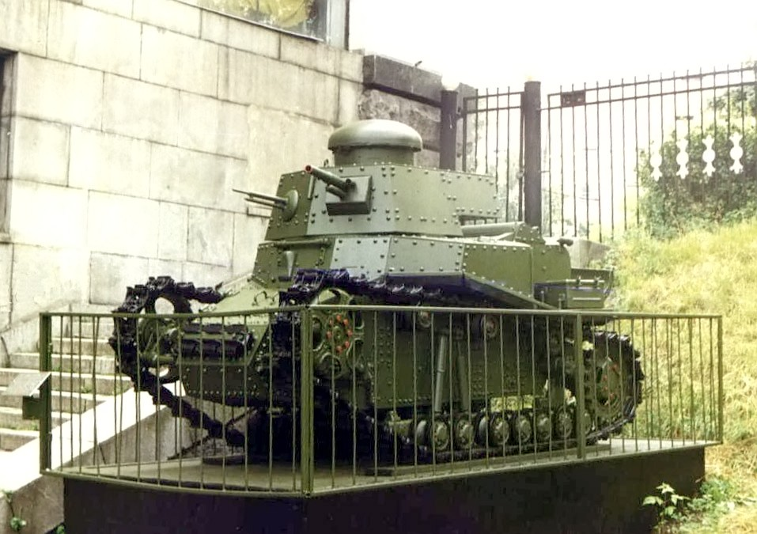
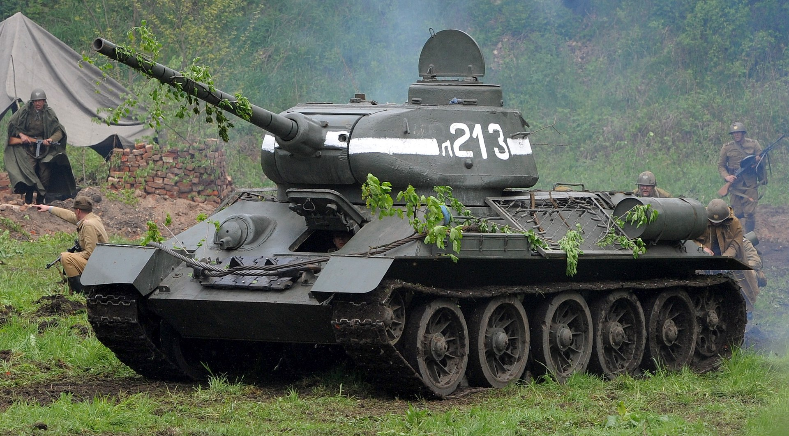
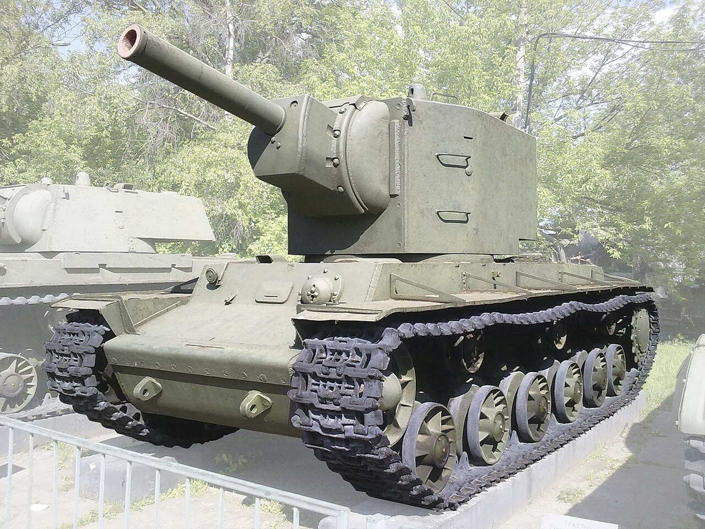

The Soviet T-18 (also called MS-1) was the first Soviet-designed and mass-produced tank, built from 1928 to 1931. It was based on the French Renault FT design but included several Soviet improvements.
It Saw limited combat during the 1929 conflict over the Chinese Eastern Railway. By the 1930s it was already becoming obsolete and was largely replaced by the T-26. Some were later used for training or static defenses
The T-34 was the Soviet Union's most famous tank of World War II and is often considered one of the most influential tank designs in history because of it's slop armor.
This tank played a crucial role in the eastern front during ww2 because of how much you could mass-produce, overall more than 80 000 T-34's were build
The KV-2 was a Soviet heavy tank famous for its enormous box-shaped turret and massive 152 mm howitzer.
The KV-2 was designed during the Winter War to destroy heavily fortified bunkers and defensive positions. Its huge gun could fire powerful high-explosive shells that were devastating against fortifications.
Early in the German invasion of the Soviet Union in 1941, KV-2s were extremely difficult for many German tanks and anti-tank guns to destroy, Some individual KV tanks caused major delays to German advances because their armor was so thick.
But because of It's heavy size and recoil, it was eventually replaced by more practical Soviet heavy tanks.